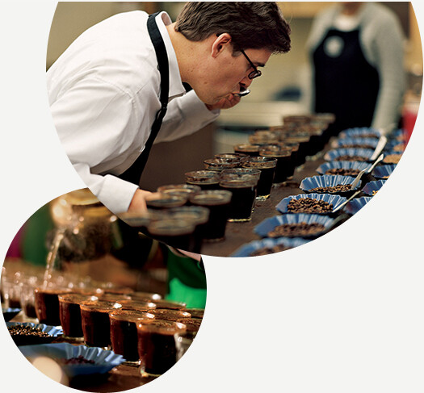
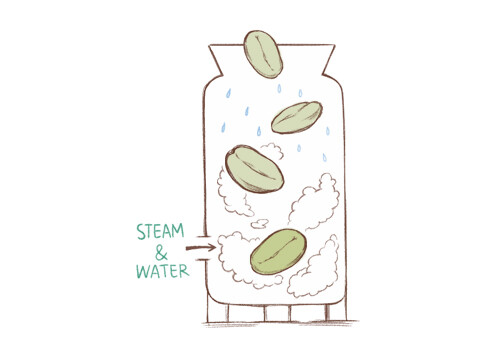
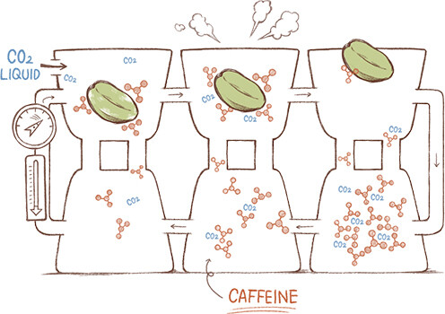

- 농장에서 우리의 손으로
- 최상의 아라비카 원두
- 스타벅스 로스트 스펙트럼
- 스타벅스 디카페인
산지와 농장

- “스타벅스만의 지속가능한 커피 생산”
스타벅스는 온도, 일광, 강우량 등 커피 재배에 이상적인 기후가
나타나는 고지대에서 생산된 아라비카 커피만 구매합니다.
그 이유는 고지대에서 재배된 원두는
풍부한 풍미와 세련된 바디감과 산미를 가지고 있기 때문입니다.
이를 위해 스타벅스는 농장과 농부들의 곁에서 커피 경작을 함께 연구합니다.
스타벅스 커피는 각 산지의 커피가 가지고 있는 최상의 풍미와 더불어
산지의 농부와 스타벅스의 노력이 담겨있습니다.
공급과 거래


- “스타벅스만의 윤리적인 커피 구매”
스타벅스는 언제나 세계에서 가장 훌륭한 커피를 구매합니다.
이를 위해 스타벅스 커피 전문가는 한 사람당 1년에 25만 잔 이상의 커피를 테이스팅 하며,
산지의 농부와 농장을 직접 방문합니다.
농부들과의 지속적인 협업과 거래를 통해 매년 고품질의 커피를 생산하고,
윤리적인 구매를 위한 활동을 지속합니다.
스타벅스 로스트 철학
- “생두가 가진 잠재된 맛을 최대한 발현”
단단한 생두가 풍미 가득하고 향기로운 원두가 되려면, 섬세한 로스팅 기술이 필요합니다.
스타벅스의 로스팅은 1971년부터 시작되었습니다.
오랜 세월 경험을 쌓아온 최고의 로스팅 기술은 예술이자 과학입니다.
로스팅 과정에서 강한 열을 가하면 생두에서 수분이 빠져나가고,
당분과 전분이 오일 성분으로 바뀝니다.
스타벅스 커피의 풍부한 맛과 향은 대부분 이 오일에서 나옵니다.
열이 너무 강하면 원두가 너무 어둡게 로스팅 되고 커피의 오일이 너무 많이 타버립니다.
반대로 열이 너무 약하면 커피의 오일이 충분히 방출되지 않고 시큼한 풍미만 남습니다.
그래서 생두가 가진 본연의 풍미를 최대한 발현시킨 커피 한 잔을 얻기 위해,
커피마다 로스팅의 시간과 온도를 약간씩 다르게 조절해야 합니다.
엄격한 비율로 완성된 블렌드
- “최상의 블렌드를 위한 노력”
스타벅스는 커피잔에 담긴 최종 결과물이 어떠해야 하는지를 가장 먼저 생각합니다.
“강조하고 싶은 풍미는 무엇인가, 무엇이 느껴져야 하는가?”
그리고 풍부한 경험을 가진 스타벅스 팀에서 각각의 블렌드를 개발하고 제조합니다.
예를 들어, 풍성한 저녁식사에 풍미를 더하기 위해 블렌드를 만들고,
싱글 오리진 커피에서 찾아볼 수 없는 매우 복잡하고 완성된 맛의 커피를 만들기도 하고,
계절에 어울리는 블렌드를 개발합니다.
또한, 고객과 파트너들이 기억하고 있는 인기 블렌드의 특징을 생생하게 되살려내기도 합니다.
이러한 최상의 블렌딩 기술은 전문가들의 경력을 합친 75년이라는 숫자가 말해줍니다.
최상의 아라비카 원두


- 최고의 커피는 최상의 원두로부터
스타벅스 아라비카 원두는 고품질, 그 이상의 의미를 갖습니다.
최상의 품질을 위한 최선의 노력들이 모든 단계에서 이뤄집니다.
과연 스타벅스는 최상의 원두를 위해 어떤 노력을 하고 있을까요?

- “고품질을 위한, 고지대를 향한”
고품질의 아라비카 원두는 고도가 높은 곳에서 재배됩니다.
큰 일교차로 당도가 높고 밀도가 단단한 원두는 깊고 복합적인 풍미를 냅니다.
- “커피 생산, 그 이상을 위한 끊임없는 노력”
스타벅스는 커피 농부들이 좋은 품질의 커피를 재배할 수 있도록 그들을 돕고 있습니다.
전 세계 주요 커피 재배 지역에 10개의 농민 지원 센터가 운영되고 있으며,
스타벅스 전문가들이 커피 경작을 위한 연구를 하여 농부들에게
무료로 제공하고 있습니다.

- “커피 농가와 지속적인 관계”
커피 농가의 미래가 곧 커피의 미래입니다.
이를 위해 스타벅스는 커피 농부들과 공정한 커피 거래를 하며,
커피 농가와 지역사회가 커피 산업으로 지속가능한 삶을 영위하도록 노력하고 있습니다.
- “까다롭고 엄격한 수확 과정”
스타벅스는 잘 익은 커피 열매만 수확합니다.
그리고 크기, 색깔 및 밀도를 기준으로 최상의 열매를 한 번 더 골라냅니다.
보다 까다롭고 엄격한 수확 과정이 곧 훌륭한 커피를 탄생시킵니다.
까다롭고 엄격한 수확 과정을 거쳐야 비로소 최상의 커피 맛을 구현할 수 있습니다.


- “고품질의 커피를 위한 수차례의 테이스트”
고품질 커피를 위한 스타벅스의 노력은
농부와 함께 생산하며 수차례의 품질 체크를 통해 완성해 갑니다.
고품질의 커피 생산은 농부에게 높은 가격으로 돌아가고,
고객들에게 풍성한 풍미의 커피로 제공됩니다.
스타벅스 로스트 스펙트럼

-
감각을 깨워주는 향긋한 블론드 로스트 커피
스타벅스 블론드 로스트는 향긋함, 은은한 산미,
부드러운 단맛이 느껴지는 산뜻한 커피입니다. -
부드럽고 균형 잡힌 미디엄 로스트 커피
부드러움과 균형 있는 맛과 풍미를 선사하는 미디엄 로스트는
스타벅스의 변함없는 커피의 맛을 보여줍니다. -
강한 풍미로 입안을 가득 채우는 다크 로스트 커피
스타벅스 다크 로스트는 묵직한 바디감과 긴 여운의 강한 풍미로
많은 커피 팬들이 사랑하는 커피입니다.
스타벅스 디카페인 커피

- “고품질의 커피를 위한 수차례의 테이스트”
고품질 커피를 위한 스타벅스의 노력은
농부와 함께 생산하며 수차례의 품질 체크를 통해 완성해 갑니다.
고품질의 커피 생산은 농부에게 높은 가격으로 돌아가고,
고객들에게 풍성한 풍미의 커피로 제공됩니다.
일반 커피와 디카페인 커피의 차이는 무엇인가요?
스타벅스 디카페인 커피는 화학제품을 쓰지 않고 오직 카페인만을 제거하는 CO2 방식으로 만들어집니다.
일반 커피 대비 맛과 향의 차이가 거의 없는 것이 가장 큰 특징입니다.
스타벅스 디카페인 커피를 만드는 CO2 추출 방식을 소개합니다.
-

1생두를 깨끗하게 세척한 뒤, 증기와 물을 이용해 생두를 불립니다.
-

2카페인을 추출할 수 있는 스테인리스 스틸 용기에 물에 불린 생두를 넣습니다.
-

3액체 상태의 CO2가 높은 압력에서 생두와 접촉하여 생두의 카페인만
추출하는 역할을 하고 커피의 맛과 향은 그대로 보존됩니다. -

4디카페인 공정을 마친 생두는 스타벅스만의 탁월한 로스팅과
커핑을 거쳐 스타벅스 디카페인 에스프레소 로스트 원두로 탄생합니다.